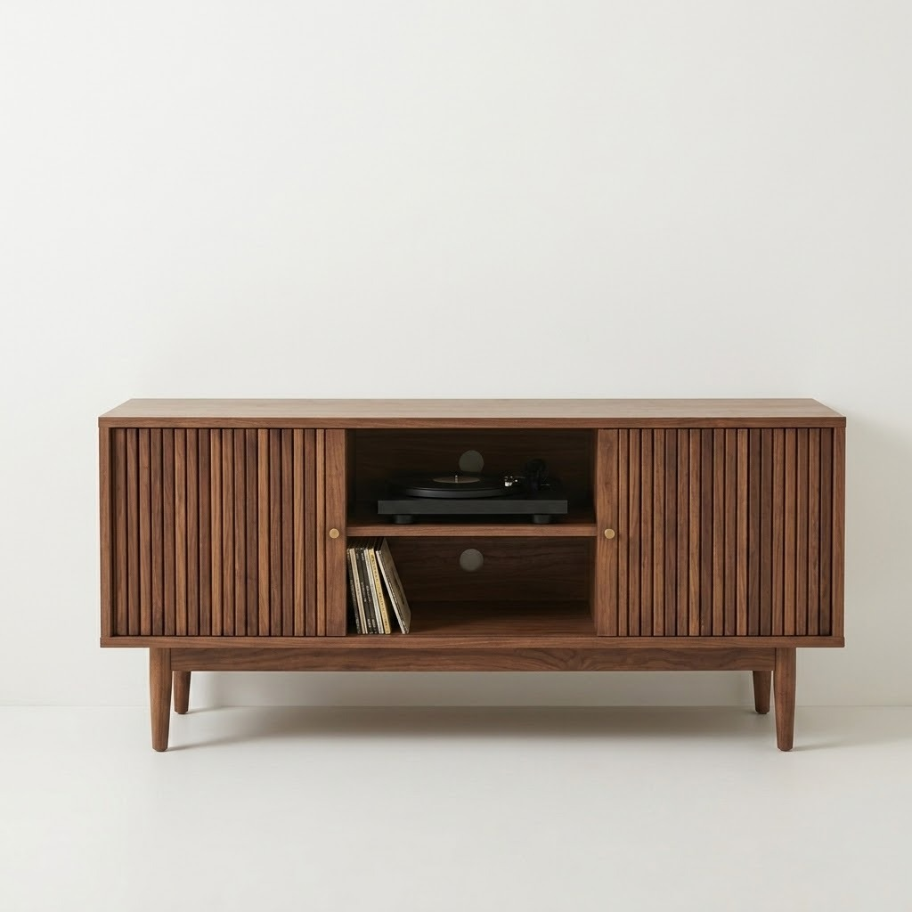
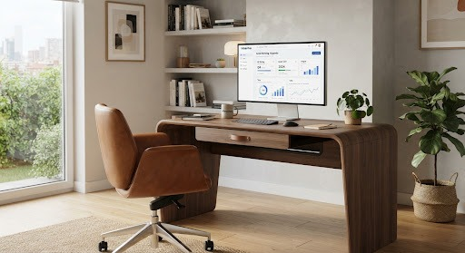
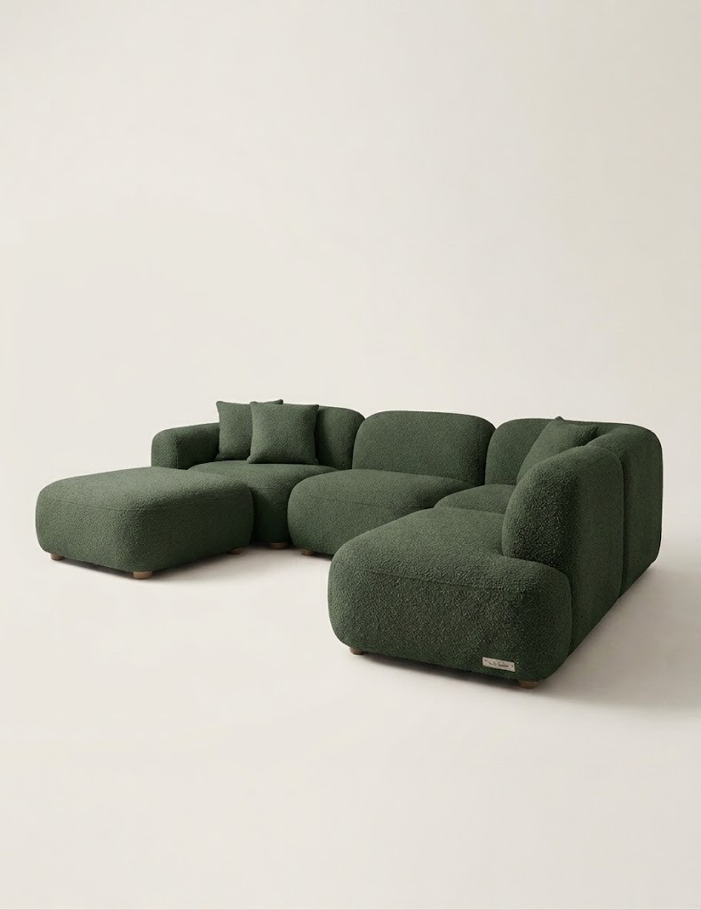

Diseño Funcional
Creamos piezas que no solo deslumbran, sino que resuelven necesidades reales, integrándose armónicamente en el hábitat contemporáneo.

Una empresa nacional con raíces profundas en la artesanía y la mirada puesta en el diseño contemporáneo.
Nacimos de la convicción de que el diseño argentino tiene una voz propia. En MUEBLERÍA JOTA fusionamos la nobleza y calidez de nuestros materiales autóctonos con una estética depurada y moderna. Cada pieza que sale de nuestro taller es un testimonio del talento local y de nuestra inquebrantable dedicación a la excelencia.
Somos una empresa orgullosamente nacional: apostamos por la producción local, generamos empleo genuino y elevamos el estándar de la manufactura argentina para competir en el mundo.

Creamos piezas que no solo deslumbran, sino que resuelven necesidades reales, integrándose armónicamente en el hábitat contemporáneo.
Seleccionamos materiales nobles y aplicamos técnicas de ebanistería tradicionales combinadas con tecnología de precisión para asegurar durabilidad.
Consolidar la identidad del mobiliario argentino, demostrando que el diseño local tiene el calibre para ser referente internacional.
Acompañar a cada cliente con un servicio personalizado, desde la elección hasta la entrega, haciendo de cada compra una inversión para toda la vida.
Sin concesiones. Buscamos la perfección en cada ensamble, en cada acabado.
Nuestra herramienta para transformar madera bruta en arte habitable.
Invertimos en nuestro país, confiamos en nuestra gente, creamos valor local.
Comprometidos con el medio ambiente y en constante búsqueda de nuevas formas de crear.
